注意：本系列文章是 zcc 编译器 总结系列文章，本系列文章并不打算呈现所有的代码细节（主要是细节太多了，全部呈现既不现实文章也看着冗长而没有意义）。因为是总结性质的文章，所以更多是分享实现的过程中个人感兴趣的点
一些用上的 GNU x86-64 汇编指令
注意这里使用的不是 Intel 汇编语法
注意，GAS(GNU Assembler) 使用的是 AT&T 语法，GAS 汇编指令通常会添加一些类似于
b，s,w，l，q，t等后缀，这些后缀的意义是为了确定要操作的数的大小
b= byte (8 bit)s= short (16 bit integer) or single (32-bit floating point)w= word (16 bit)l= long (32 bit integer or 64-bit floating point)q= quad (64 bit)t= ten bytes (80-bit floating point)
如果要引用一个寄存器，这个寄存器的前面必须要加
%，比如movq %rsp, %rbp，对于一个常数 (constant number) 来说它必须要加前缀$，比如movb $0x05, %al
对于 AT&T 语法而言，一般来说，源地址(第一个操作数)在前，目的地址(第二个操作数)在后
下面的表格展示的是 zcc 编译器中使用到的一些汇编指令
| 汇编指令 | 指令意义 | 示例 |
|---|---|---|
| mov(q) | 将数据从某个地方移动到另一个地方 | movq %rdx, %rsi |
| push(q) | 入栈，将数据压入某个栈中 | pushq %r10 |
| pop(q) | 出栈，将数据从某个栈中弹出 | popq %r10 |
| lea(q) | Load Effective Address: 将第一个操作数指定的 地址 放入第二个操作数指定的寄存器中 | leaq 1(%rbp), %r10 |
| add([blq]) | 将第一个操作数和第二个操作数相加，并将结果存储在第二个操作数中 | addq %r11, %r10 |
| sub([blq]) | 将第一个操作数和第二个操作数相减，并将结果存储在第二个操作数中 | subq %r11, %r10 |
| mul([blq]) | 将第一个操作数和第二个操作数相乘，并将结果存储在第二个操作数中 | mulq %r11, %r10 |
| idiv([blq]) | Signed Divide: 将 ax、dx:ax 或 edx:eax(被除数)中的(带符号的)值除以第一个操作数(除数)，并将结果存储在 ax、dx:ax 或 edx:eax 寄存器中 | idivq %r11, %r10 |
| movzb(q) | Move with Zero-Extend: 将第一个操作数的内容 复制 到第二个操作数指定的寄存器中，0 扩展(zero extend) 该值。转换后的值的大小取决于操作数的 size 属性 | movzbq 1(%rbp), %r10 |
| movsl(q) | Move with Sign-Extension: 将第一个操作数的内容 复制 到第二个操作数指定的寄存器中，将该值有符号地扩展(sign extends)为 16 或者 32 bit 。转换后的值的大小取决于操作数的 size 属性 | movzbq 1(%rip), %r10 |
| sal(q) | Shift Arithmetic Left: 将第一个操作数中的 bit 向左 移动第二个操作数中指定的 位数 | salq $1, %r10 |
| shl(q) | Shift Logical Left: 将第一个操作数中的 bit 向左 移动第二个操作数中指定的 位数 | shlq %cl, %r10 |
| shr(q) | Shift Logical Right: 将第一个操作数中的 bit 向右 移动第二个操作数中指定的 位数 | shrq %cl, %r10 |
| and(q) | Logical AND: 对第一个操作数和第二个操作数执行 按位与 操作，并将结果存储在第二个操作数的位置 | andq %r11, %r10 |
| or(q) | Logical Inclusive OR: 对第一个操作数和第二个操作数执行 按位或 操作，并将结果存储在第二个操作数的位置 | orq %r11, %r10 |
| xor(q) | Logical Exclusive OR: 对第一个操作数和第二个操作数执行 按位异或 操作，并将结果存储在第二个操作数的位置 | xorq %r11, %r10 |
| neg(q) | Two’s Complement Negation: 对第一个操作数的值替换为其 2 的补码，并将其结果存储在第一个操作数的位置 | negq %r11 |
| not(q) | One’s Complement Negation: 对第一个操作数执行 按位取反 操作，并将结果存储在第一个操作数的位置 | notq %r11 |
| test | Logical Compare: 计算第一个操作数和第二个操作数执行 按位与 之后的结果 | test %r11, %r10 |
| cmp([blq]) | Compare Two Operands: 比较第一个操作数和第二个操作数，并根据结果在 EFLAGS 寄存器中设置状态标志 | cmpq %rdx, %rbx |
| sete,setne,setl,setg,setle,setge | Set Byte on Condition: 根据 EFLAGS 寄存器中状态标志(CF、SF、of、ZF 和 PF)的设置，将第一个操作数设置为 0 或 1 | sete %r10b |
| jne,je,jge,jle,jg,jl | Jump if Condition Is Met: 检查 EFLAGS 寄存器中一个或多个状态标志(CF、of、PF、SF 和 ZF)的状态，如果这些标志处于指定的状态(条件)，则跳转到第一个操作数指定的 label | jne L1 |
| jmp | Jump: 将程序传输到指令流中的另一个点，而不记录返回信息 | jmp L1 |
| cld | Clear Direction Flag: 将 Direction Flag 置为 0 | cld |
| lods(q) | Load String: 将一个 byte 、一个 word 或一个 double 从第一个操作数加载到al、ax 或 eax 寄存器中 | lods(q) |
| loop | 循环到某个 label | loop __next |
| cqo | Convert Word to Doubleword/Convert Doubleword to Quadword: 通过符号扩展的方式将 ax、eax 或 rax 寄存器中操作数的 size 翻倍(取决于操作数的 size)，并将结果分别存储在 dx:ax、edx:eax 或 rdx:rax 寄存器中 | cqo |
| ret | Return from Procedure: 将程序调转到位于 栈顶 的 返回地址(return address) 的位置，这个 地址 通常通过 call 指令放在这个栈上 |
ret |
| call | Call Procedure: 保存在栈上跟程序相关的信息，然后 调用 第一个操作数指定的程序 | call func_name@PLT |
其他指令
| 汇编指令 | 指令意义 | 示例 |
|---|---|---|
| .globl | .globl 指令声明该 symbol 在作用域中是全局的 | .globl xxx |
| .byte | .byte 指令会在当前 section 中生成已经初始化好的 byte | .byte 0 |
| .long | .long 指令会在当前 section 中生成 8 byte 的值 | .long 1 |
| .quad | .quad 指令会在当前 section 中生成 16 byte 的值 | .quad 1 |
| .text | .text 指令将当前 section 定义为 .text，用于声明一段代码的起始位置 | .text |
| .data | .data 指令将当前 section 更改为 .data，用于声明静态数据区 | .data |
| L | 表示为 label，可以理解为代码片段名 | L1 |
一些寄存器
| 64-bit 寄存器 | 低 32-bit 寄存器 | 低 16-bit 寄存器 | 低 8-bit 寄存器 |
|---|---|---|---|
| rax | eax | ax | al |
| rbx | ebx | bx | bl |
| rcx | ecx | cx | cl |
| rdx | edx | dx | dl |
| rsi | esi | si | sil |
| rdi | edi | di | dil |
| rbp | ebp | bp | bpl |
| rsp | esp | sp | spl |
| r8 | r8d | r8w | r8b |
| r9 | r9d | r9w | r9b |
| r10 | r10d | r10w | r10b |
| r11 | r11d | r11w | r11b |
| r12 | r12d | r12w | r12b |
| r13 | r13d | r13w | r13b |
| r14 | r14d | r14w | r14b |
| r15 | r15d | r15w | r15b |
对于 zcc 编译器来说，用到的寄存器如下
static char *register_list[] = { |
另一个在 zcc 编译器中广泛用到的一个寄存器是 %rip，%rip 是一个 64 位的指令地址寄存器，用来存储 CPU 即将要执行的指令的地址。每次 CPU 执行完相应的汇编指令之后，%rip 寄存器的值就会 自行累加。%rip 寄存器也无法被直接赋值
call、ret、jmp、cmp 等一些分支指令可以修改 %rip 寄存器的值
比如如下的汇编代码
LXXX0: |
%rip 有时也会被用在 访问全局变量 中
还有一个用的比较多的寄存器是 %rbp，%rbp 是一个 栈基地址寄存器，用来指向当前栈帧的 起始 地址，大部分用于函数的 调用栈 场景
%rbp 有时也会被用在 访问局部变量 中
x86-64 的栈布局
首先一个问题，为什么函数调用需要用到 栈?
对于一个寄存器来说，有 2 种分类
- “Callee Save“: 寄存器的值由 被调用者 保存
- “Caller Save“: 寄存器的值由 调用者 保存
函数调用时，父函数和子函数可能都会用到一些同名的 通用寄存器
如果不用 栈，那么在函数调用时，子函数使用了这个 通用寄存器，可能会把父函数的在 通用寄存器 中保存的值给 覆盖 掉，那么子函数返回后，对于父函数来说，它之前保存的值就没办法恢复 了
对于 “Caller Save“ 寄存器来说，在进行子函数调用之前，需要由 调用者 提前保存好它们的值，这样子函数就可以放心对这些寄存器进行数值覆盖了。那么如何做到呢? 就是用 栈，先把这堆 “Caller Save“ 寄存器的值 入栈，等到子函数返回时，再将这堆 “Caller Save“ 寄存器的值 出栈，父函数之前在寄存器内保存的值就 能恢复 了
被调用方
被调用方也就是 函数声明定义 的一方
对于代码
long func( |
来说，它的栈布局如下所示
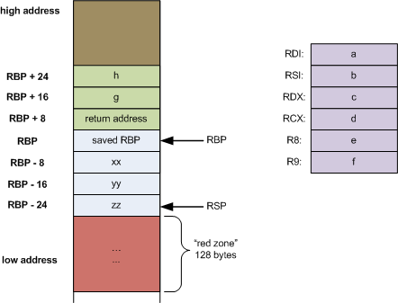
如图所示，对于 x86-64 的汇编而言，函数 func 会先将里面的 6 个参数按照顺序放入 %rdi、%rsi、%rdx、%rcx、r8、r9 这些寄存器中，超过 6 个的部分，则需要先计算出这些参数类型的 size，它们加起来就是相对于 %rbp 的 offset，然后在这个 offset 的基础上入栈
对于函数参数和函数的 return address 而言，它们基于 %rbp 的 offset 都是 正向 的
对于函数里面的局部变量，它们基于 %rbp 的 offset 都是 负向 的
注意这里如果要说 “top of the stack” 也就是 栈顶，对于 x86 来说，指的是栈所占的内存区域中 最低地址 的位置，图中
%rsp指针所指向的位置，就是 栈顶
而对于图中的 红区 来说，它是一种优化，可以假设 %rsp 下方的 128 byte 的内存空间的数据不会被一些异步的操作(比如中断)给清理掉(因为这些区域是保留区域)，因此可以通过使用这个内存空间来获取临时数据，栈指针 %rsp 也就没有必要做移动了
比如如下的代码
long func2(long a, long b, long c) { |
它的栈布局如图所示
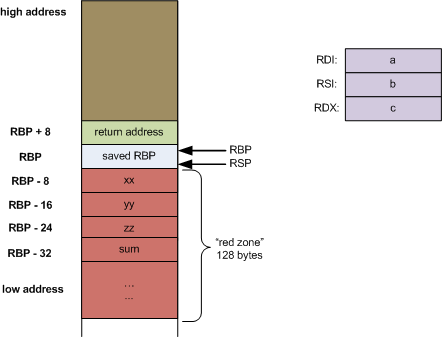
对于一个叶子函数(leaf function) 来讲，它的函数体内 没有调用其他函数，比如上述代码中的 func2，并且对它来说也只有 3 个参数，那么也不需要往栈上入栈一些参数了，这个时候它就可以把它的一些局部变量放在 红区，%rsp 指针也无须移动
调用方
调用方就是 执行函数调用 的一方
调用方在调用之前，需要做一些准备工作
- 保存应该由调用方保存的寄存器，比如
%eax或者%rax，这些寄存器一般用来保存函数返回值 - 判断函数的参数个数，如果参数 > 6 个，比如函数参数
a, b, c, d, e, f, g, h， 和局部变量xx, yy, zz，则先入栈h, g和xx, yy, zz对应的值 - 如果参数 <= 6 个，则使用上面提到的 6 个寄存器来存
a, b, c, d, e, f对应的值
调用时的工作为
- 使用
call指令调用函数 - 判断函数参数个数，如果参数 > 6 个，则通过向
high address方向移动%rsp指针，来移除掉栈上的参数(比如xx, yy, zz) - 剩下的还在栈上的参数(比如
h, g)，使用pop指令弹出 - 恢复由调用方保存的寄存器，比如
%eax或者%rax，拿到返回值
back-end 大体逻辑
核心逻辑
这部分的核心代码在 generator.c 中的 interpret_ast_with_register 函数里面
可以看到，代码的核心结构如下
// generator.c |
可以看到，以上代码主要就还是对已经生成的 ast 做一个 后序遍历 的工作
下面要讨论的是主要是一些比较关键的节点
AST_IF
首先来看一个例子
void main() { |
上面代码中的 if 部分，生成的 ast 如下图
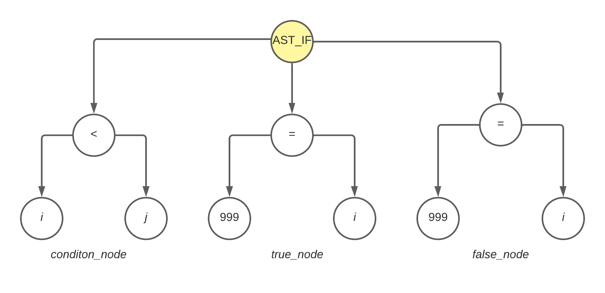
而对于以上的 ast，需要生成如下的汇编代码
# i = 6; |
如上述汇编代码中所注释的那样，对于 if 节点，递归遍历的顺序是 condition_node > true_node > false_node
- 先遍历
condition_node，将i和j分别放入%r10和%r11寄存器中 继续遍历
condition_node，这个时候解析到<操作符了，调用register_compare_and_jump函数，生成cmpl %r11d, %r10d
jge L2遍历
true_node，将%10也就是i的值所在的寄存器，将999赋值给这个寄存器，生成movq $999, %r10
movl %r10d, -4(%rbp)这个时候看看整个
ifast 还有没有false_node，即有没有else分支，如果有，生成jmp L3
L3表示的是if else语句结束时的地方如果有
false_node，那么继续遍历false_node，先生成一个false_node的labelL2:
然后再生成赋值相关的的汇编，即生成
j = 999;movq $999, %r10
movl %r10d, -8(%rbp)最后，因为之前生成了
jmp L3，所以结束位置也要生成L3:
以上逻辑在 generator.c 中的 interpret_if_ast_with_register 函数 里面可以看到
这么一看，是不是整个过程很像是 流程图? 是的，只不过是说，汇编代码就是做原来的代码的翻译罢了，而代码不可能会被直接翻译成汇编，所以就需要有 ast 这种组织形式来方便我们做代码的遍历，最后依照 “汇编的语法”
去生成这段代码逻辑
其中 interpret_ast_with_register 中的 if_label 的作用，主要就是传给 register_compare_and_jump 函数用的
AST_WHILE
再来看一个例子
void main() { |
以上代码，关于 while statement 生成的 ast 如下
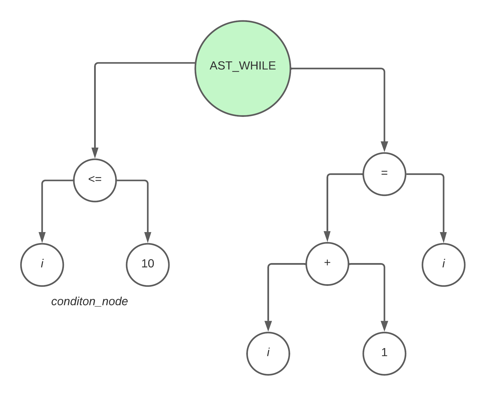
同样的，对于上述 ast，需要生成的汇编代码如下
L3: |
那么其实逻辑也很简单了，对于 while 节点来说，先遍历它的 left_node，也就是 condition_node，再遍历它的 right_node，也就是 compound_statement_node，这里面逻辑就不再赘述了，因为也很简单，感兴趣的朋友可以直接看 generator.c 中的 interpret_while_ast_with_register 函数
那么对于 for 语句来说，也是一样的，之前在说编译器的 front-end 时就谈到过，for 语句其实最终可以变成上面的拥有 while 节点的 ast，那么逻辑上也是调用 interpret_while_ast_with_register 这个函数来实现
那么假如 while 中有 break 或者 continue 怎么办?
注意代码中的
+号，表示新添加的代码
比如在上述的代码中加入 break
void main() { |
那么上述代码会生成如下的 ast
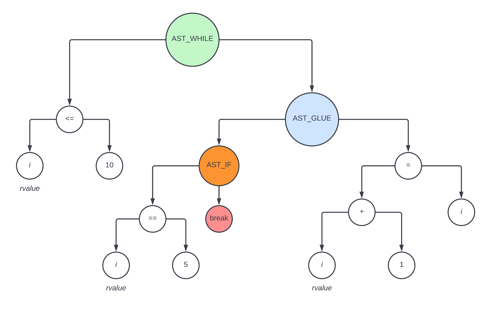
对于上述 ast，它需要生成如下的汇编代码
L3: |
比如在上述的代码中加入 continue
void main() { |
那么上述代码会生成如下的 ast
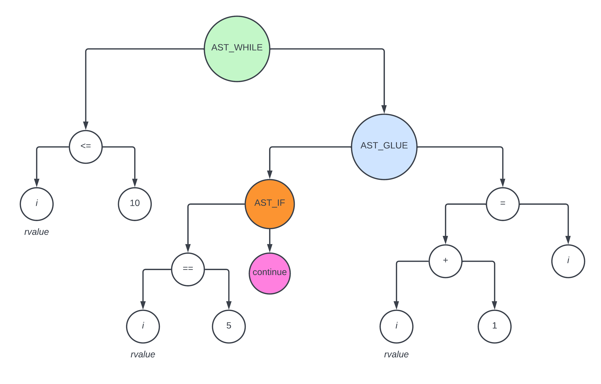
L3: |
通过以上论述，我们可以看到，假如存在 break 和 continue 的情况，只需要先对 if 做解析生成对应的汇编代码，然后剩下的代码跟之前没有 break 和 continue 是差不多的
在 interpret_ast_with_register 函数中，对 break 和 continue 是这么处理的
int interpret_ast_with_register( |
其中函数的参数 loop_start_label 和 loop_end_label 就是为 break 和 continue 这两种情况准备的
- 对于
break而言，由于它最终是要 跳出 循环，所以需要一个 循环结束 的 label - 对于
continue而言，由于它最终是要 回到 循环，所以需要一个 循环开始 的 label
AST_SWITCH
对于如下的 switch 语句
int main() { |
会生成如下的 ast
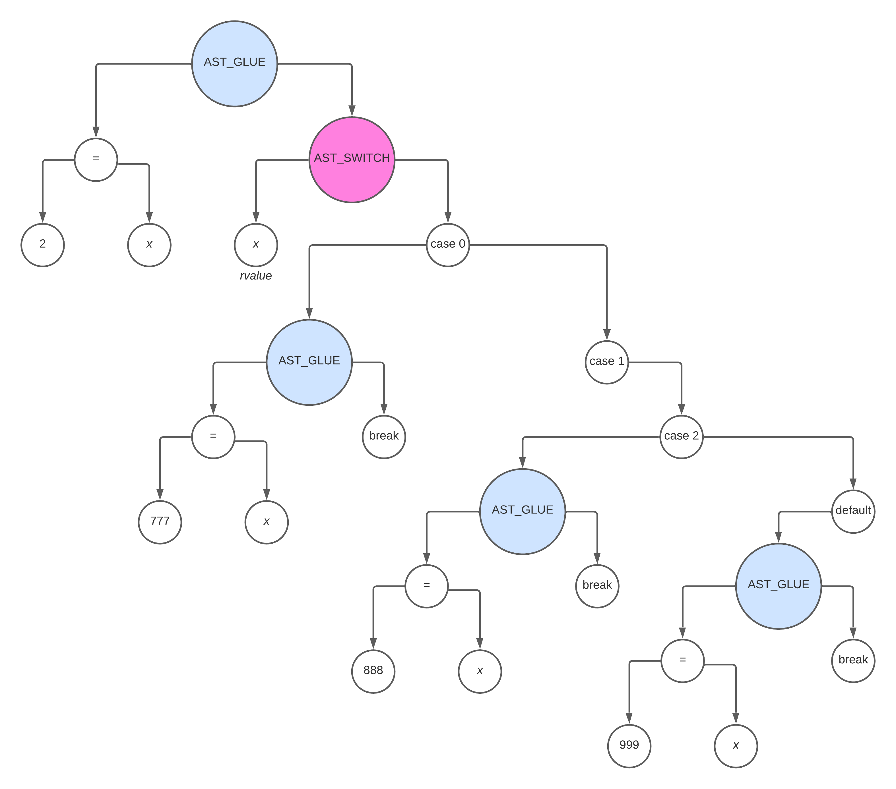
生成 switch 相关的汇编比较特殊，需要 先生成 一个 执行 Branch Table 的模板，如下
# %rsi 里面存放的是 Branch Table 的基地址 |
首先一个问题，为什么需要 Branch Table ?
其实所谓的 Branch Table，跟整体的 switch case 语句的逻辑是一样的，它的核心都是
- 匹配一个条件(
switch(x)中的x) - 跳转到跟这个
x相关的某个相关的语句(case x:)下执行某段逻辑
用表格来表示就是类似于如下
| case x | label |
|---|---|
| 1 | L20 |
| 2 | L21 |
| 3 | L22 |
| default | L23 |
只要能 匹配到某个条件进行 goto 跳转，那么这个就可以用一个 Branch Table 来表示
同时，在性能上也会有相应的提升。如果不用这个 Branch Table 模板，那么就必须要为每个 switch case 语句生成对应的跳转处理的代码，
那么对于上面示例的 switch case c 代码，其生成相关的汇编代码是怎样的呢
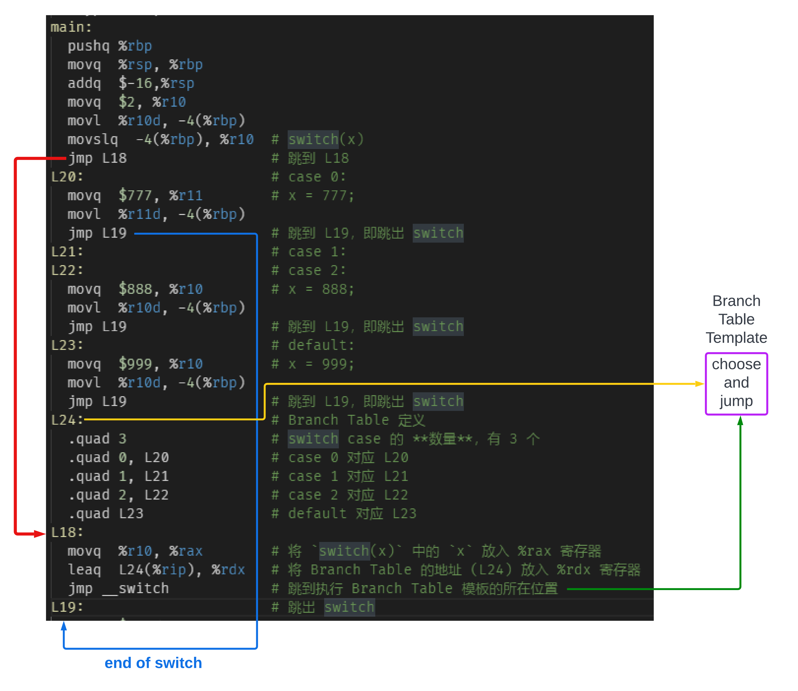
所以本质上，逻辑还是 choose and jump，直到把 case 的数量遍历完成，并且其中完成了所有的匹配工作，就退出
AST_GLUE
之前说过，对于用 AST_GLUE 节点连接起来的 ast 来讲，是如下的样子
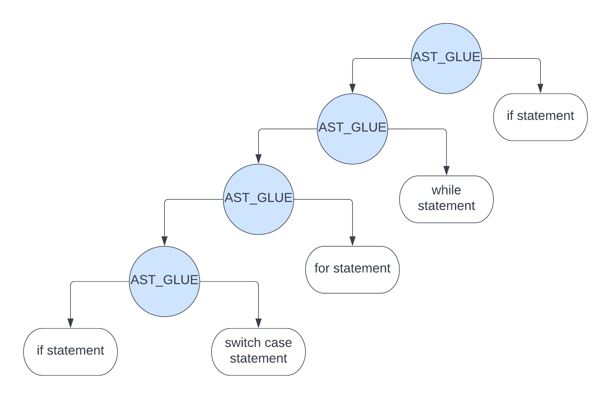
所以如果解析到 AST_GLUE 节点，它依然需要做后序遍历递归，直到遍历到最左边的 statement 节点
int interpret_ast_with_register( |
AST_FUNCTION
之前说过，对于 AST_FUNCTION 节点，它的 ast 如下图
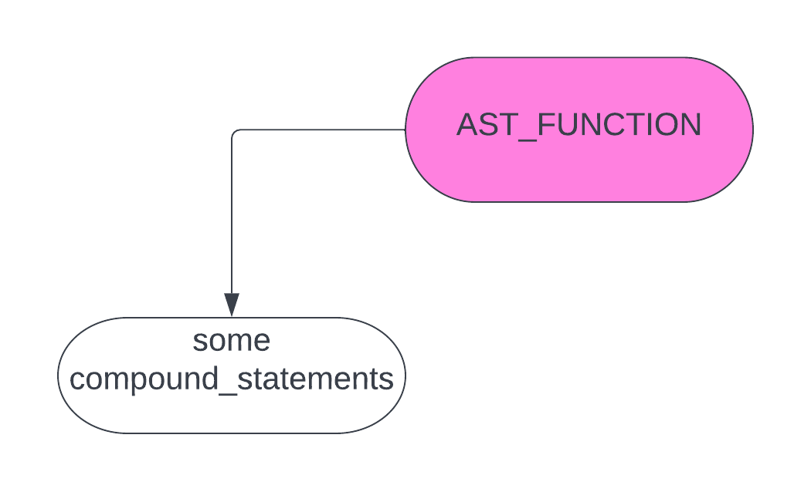
在对 some compound_statements 节点进行 递归之前，它需要做如下操作
- 为了保存寄存器信息，将寄存器中的形参 对应的值 入栈，入栈个数最多是 6 个，比如上文提到过的，形参有
a,b,c,d,e,f,g,h，那么就将在寄存器中的a,b,c,d,e,f对应的值入栈。对于g, h来说，则不用管，因为在 函数调用前 会将它们直接入栈(在 栈基 地址的 正向位置) - 剩下的如果还有局部变量，比如
int xx, yy;之类的，也需要对它们在栈上的位置做一个计算，等后面解析到int xx, yy;时就可以根据它们在栈上的位置的信息，将它们放到栈上对应的位置(在 栈基 地址的 负向位置) - 移动
%rsp指针到 栈顶 的位置
在对 some compound_statements 节点进行 递归之后，它需要做如下操作
- 移动
%rsp指针到 栈基 的位置 - 将栈上所有的数据一并弹出
int interpret_ast_with_register( |
因此，对于示例代码
int param8(int a, int b, int c, int d, int e, int f, int g, int h) { |
其中函数声明
int param8(int a, int b, int c, int d, int e, int f, int g, int h) { |
会生成如下的汇编
# register_function_preamble |
AST_FUNCTION_CALL
之前说过，对于 AST_FUNCTION_CALL 节点，它的 ast 如下图
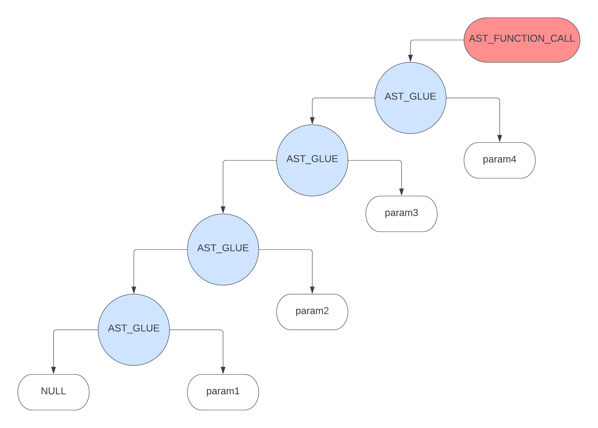
为了能让参数按照正确的顺序 入栈，对于上面的 ast 而言，只能是 先遍历右后遍历左，即遍历顺序为 param4 > param3 > param2 > param1，那么这里用 循环 即可达到目的
static int interpret_function_call_with_register(struct ASTNode *node) { |
因此，对于示例代码
int param8(int a, int b, int c, int d, int e, int f, int g, int h) { |
其中函数调用 param8(11, 22, 33, 44, 55, 66, 77, 88); 会生成如下的汇编
# spill_all_register |
AST_FUNCTION 和 AST_FUNCTION_CALL 的整体过程图解
对于示例代码
int param8(int a, int b, int c, int d, int e, int f, int g, int h) { |
在执行上述汇编代码 call param8@PLT 之前，栈和寄存器相关的图是这样的
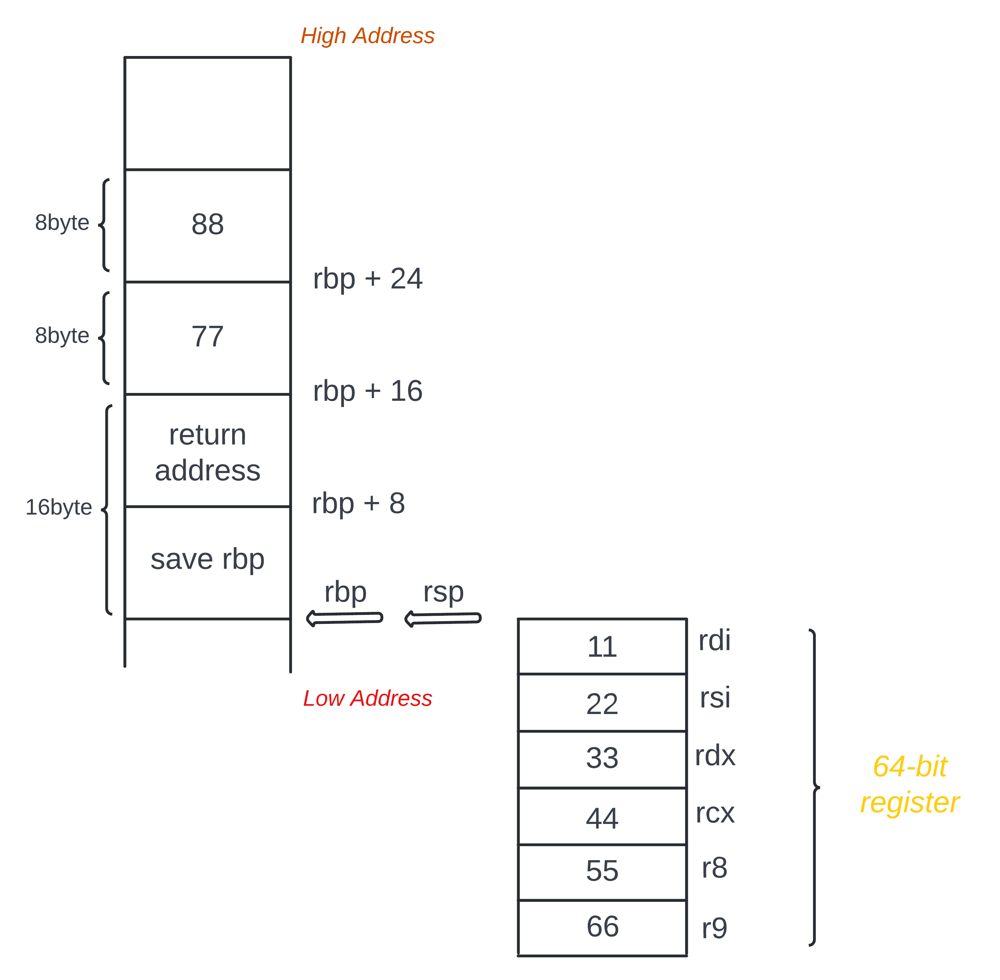
在执行上述汇编代码 call param8@PLT 之后，栈和寄存器相关的图是这样的
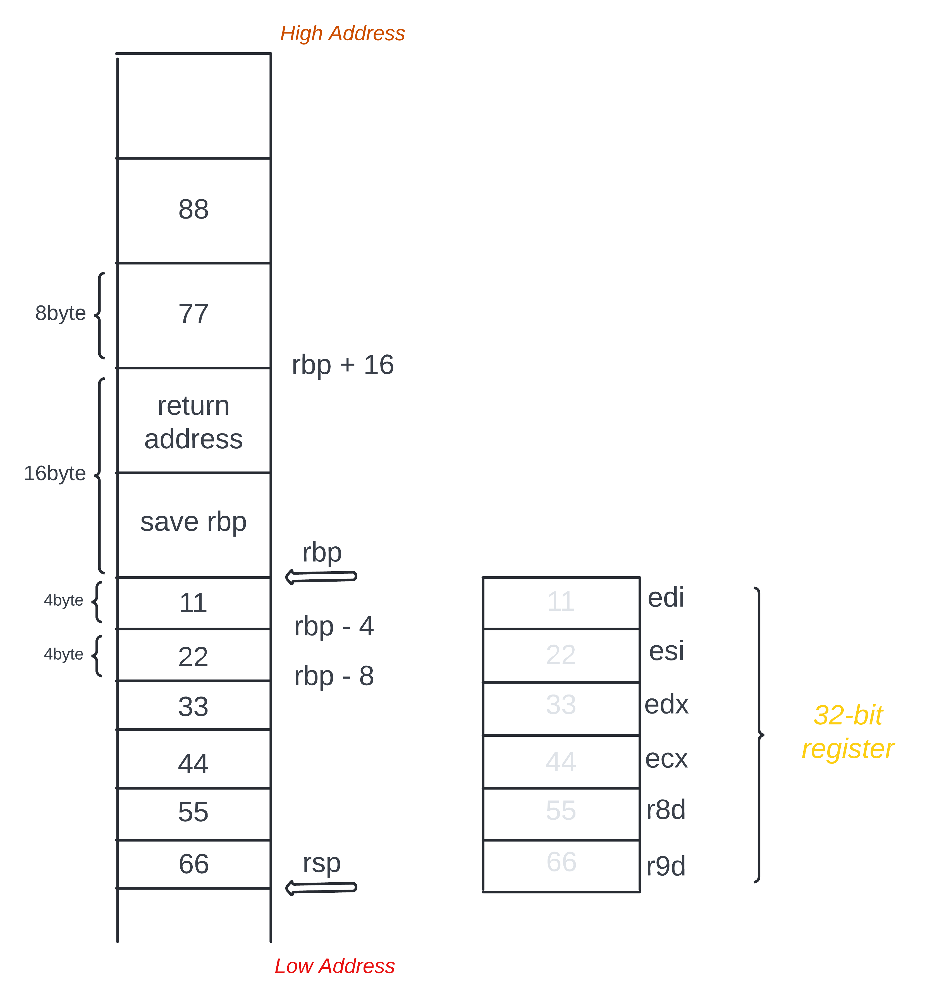
注意这里
return adressreturn 的是main函数的地址，returnparam8函数的地址在下面没有写出来
这里可能很多人会有个疑问，为什么在执行 call param8@PLT 之前，用的是 64-bit 的寄存器，而在执行 call param8@PLT 之后，又用的是 32-bit 的寄存器呢? 这个 64-bit 的寄存器和 32-bit 的寄存器的关系是什么?难道它们可以 共享数据 吗?
我们反过来想想，假如 %rdi 和 %edi 是两个 完全不同 的寄存器的话，那么从 %rdi 寄存器存数据，就应该从 %rdi 寄存器取数据，而不是从另一个完全不同的 %edi 寄存器取数据，因为那样肯定是取不到的。那么答案很明显了，应该是某些 64 bit 的寄存器能够 兼容 32 bit 的寄存器!
在示例代码中，所声明的参数的类型都是 int 类型，对应的就是 4 byte，而用 64-bit 也就是有 8 byte 空间的寄存器来存数据肯定是没问题的! 而 %edi 这个 32-bit 的寄存器对应的 64-bit 的寄存器就是 %rdi，对于 %rdi 寄存器来说，从 %edi 寄存器取数据 只不过是从其 64-bit 寄存器读取它的低 32-bit 的数据罢了
比如
最高位 |
这样的数据，用 %rdi 来写入和读取是能读到最高位的 0001 的，而用 %edi 来写入和读取则只能读取到 除了最高位 0001 的剩下的那串数据
顺便说一句，用 64-bit 寄存器来取数据可以避免数据过大溢出的问题，而根据数据的类型选择不同 bit 的寄存器来读数据，则可以避免栈空间不必要的浪费的问题
寄存器分配策略
首先一个问题是，为什么需要寄存器分配策略?
答案很简单，因为 寄存器的数量是有限的，那么为什么要使用这么多寄存器，而不是用内存?那当然是因为 CPU 操作寄存器要比直接操作内存要快，并且用寄存器也会生成更少的汇编代码
那么什么情况下会用到寄存器?
答案是用在一些 局部变量 以及一些 表达式的结果 上面
这么看来，假如这些变量和这些表达式的结果很多，如果都去做分配的话，寄存器肯定是不够用的，所以这里就需要一个算法好好管理下，这也算是编译器的一种优化过程
那么这个寄存器分配策略是基于一个什么样的想法呢?
首先就是限制寄存器的使用数量，zcc 编译器里面使用了一个 free_registers 的数组，数组的大小是 4，表示目前最多有 4 个空闲的寄存器(free_registers[register_index] = 0 表示 register_index 对应的寄存器在使用中，free_registers[register_index] = 1 表示 register_index 对应的寄存器空闲)。里面的元素是 register_index，每个 register_index 代表在 register_list、lower_8_bits_register_list、lower_32_bits_register_list 里面的位置，也就分别代表了目前来说要用的寄存器的状态
但如果连这 4 个都不够用了，怎么办?
一个简单的办法是从其他地方匀一个出来。zcc 编译器就是在一堆 64-bit 寄存器里面选择 %r10, %r11, %r12, %r13 这几个寄存器，不够用的时候从这几个寄存器中抽一个出来 入栈，这样就能释放掉一个寄存器。
代码可见 generator_core.c 中的 allocate_register 函数
同时也可以在某个需要它的时刻让它 出栈，这样这个寄存器又可以拿来用了
代码可见 generator_core.c 中的 register_clear_register 函数
那么为什么使用栈?
因为栈有对应的 push 和 pop 的操作，只需要移动栈指针就可以很轻松地解决 寄存器要溢出到哪个地方?哪些寄存器应该溢出?什么时候应该溢出?如何重新使用这些寄存器? 这几个问题
不然的话使用内存堆，那么复杂度就上去了，还需要实现一个内存管理器，我觉得对于只是实现一个编译器来讲性价比就太高了，也没必要这么做
用栈来实现这个功能是最简单的，快糙猛
那么在哪里会用到栈呢?
答案是在 解析函数定义 和 解析函数调用 的地方需要用到
就是之前说的到处理 AST_FUNCTION 和 AST_FUNCTION_CALL 节点的地方
但对于要使用这个溢出的寄存器来说，只有在 解析函数调用 的时候才去用，因为有函数调用，才可能有表达式的计算，才可能会用到这些寄存器
但现在并不知道哪个寄存器被溢出到栈了，然后哪个寄存器又应该从栈上弹出拿来使用，所以这里索性把 %r10, %r11, %r12, %r13 这几个寄存器一起处理，即
- 在函数调用前 全部顺序入栈
- 在函数调用时 会使用到这些匀出来的寄存器
- 在函数返回前 全部倒序出栈
以上就是一些寄存器分配的简单思路
计算栈上的 offset
计算这个 offset 通过一个 local_offset 和 stack_offset 的本地局部变量完成
这里计算 offset 一共有两个地方，一个是 register_new_local_offset 函数
static int register_new_local_offset(int primitive_type_size) { |
如上述代码所示，这个函数主要是为了 push 入栈服务
要入栈时，需要将栈指针对齐为 16 的倍数，即
stack_offset = (local_offset+15) & (~15); |
比如 local_offset 现在是 4，4 + 15 就是 19，也就是 0001 0011，~15 就是 1111 0000，按位 & 结果就是 0001 0000，也就是 16
x & (~15) 是取其最高位的做法
字节对齐
先上代码
int register_align(int primitive_type, int offset, int direction) { |
那么哪里会用到呢? 在 parse_composite_declaration 里面
static struct SymbolTable *parse_composite_declaration(int primitive_type) { |
由于在 Front-end 篇已经说了内存对齐原理，这里就不再赘述 Front-end 相关内容了，但是着重讲下 register_align 中那条 offset = (offset + direction * (alignment - 1)) & ~(alignment - 1); 语句的意思
首先假设 offset 是 4，direction 是 1，那么语句就变成 offset = (4 + 1 * (4 - 1)) & ~(4 - 1)
那么就是 offset = 7 & ~3，7 是 0000 0111，而 ~3 就是 1111 1100，那么最终结果就是 0000 0100 即 4，x & ~3 就是取其第 3 位
那么依据以上，offset = (offset + direction * (alignment - 1)) & ~(alignment - 1); 的意思就是 结果至少是 offset 的倍数
参数 direction 的意思是 向上对齐 还是 向下对齐，1 为向上对齐，-1 为向下对齐
比如
struct xxx { |
direction = 1，那么
struct xxx { |
direction = -1，那么
struct xxx { |
总结
以上基本就是 back-end 比较重要的一些内容了，主要就还是一些寄存器以及汇编指令的使用，以及最重要的是需要熟悉 x86 的栈布局，函数定义时和函数调用时栈是怎么样的一个情况